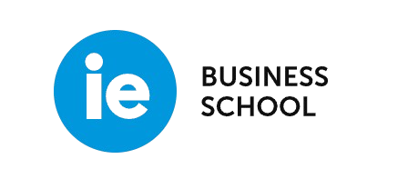
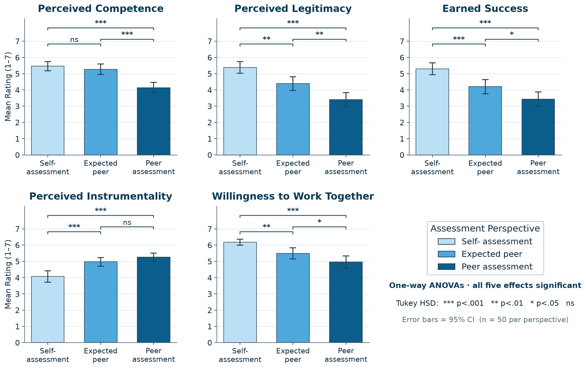
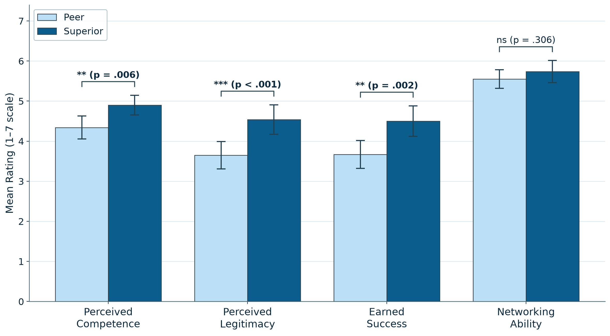

39th Annual
Conference
IE Business School, IE University

Sponsorship is third-party advocacy that places a candidate into a concrete opportunity, putting the sponsor's own reputation at risk; it has long been recognized as central to career advancement. By drawing on social capital, it gives the sponsee access to information, influence, and opportunity, and is typically framed as a career benefit.
Yet sponsorship is also an ambiguous signal: it conveys relational value, such as network utility, political cover, and reach, while simultaneously raising doubts about the sponsee's competence and the legitimacy of the relationship itself. Observers facing this ambiguity tend to lean on the signal and related heuristics when forming judgments, shaping how the sponsee is ultimately received.
How do sponsees and third-party observers diverge in interpreting a sponsorship event — and how does that divergence shape observers' willingness to collaborate with the sponsee?

